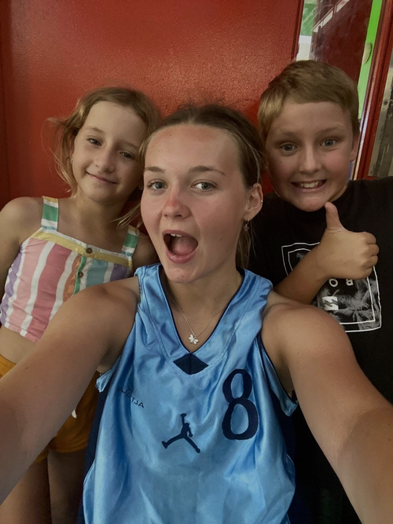
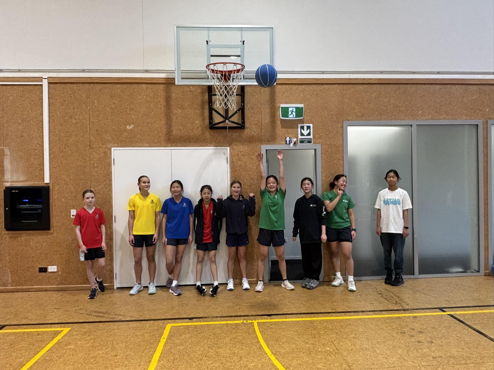
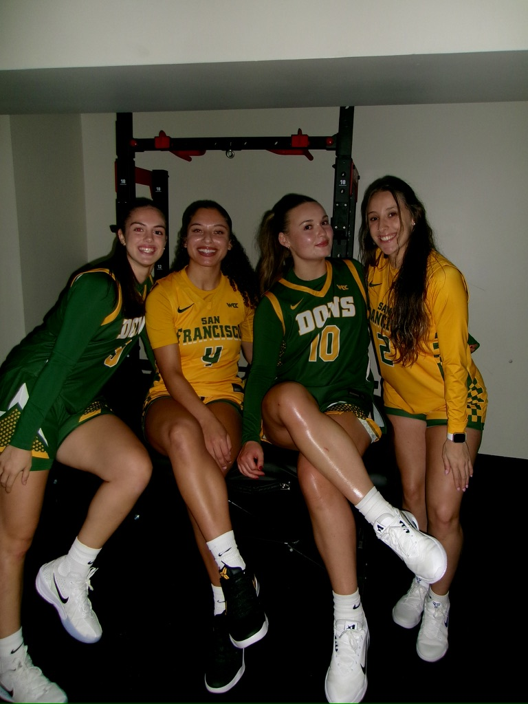
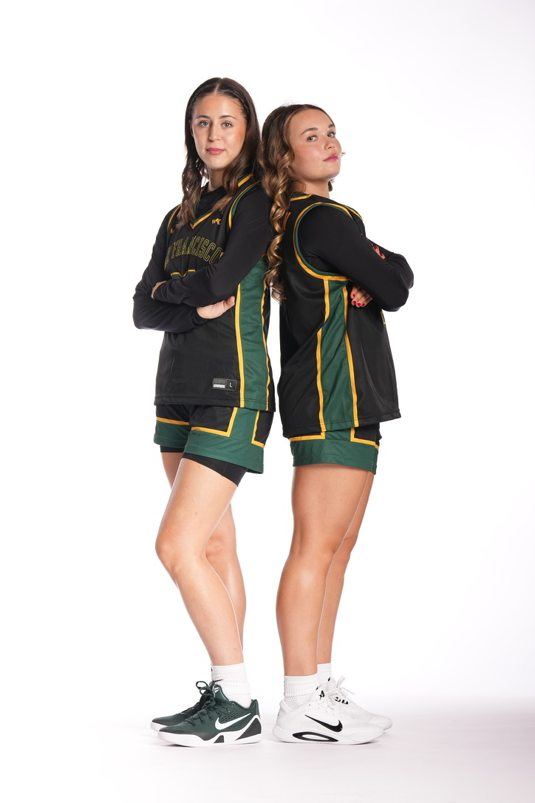

My name is Amy Pateman, and I'm a Sociology student at the University of California, Riverside. I also play Division I women's basketball. I grew up in Auckland, New Zealand, and moving to the United States to pursue both my education and my basketball career has been one of the biggest experiences of my life. It pushed me far outside my comfort zone and in the process made me more independent, confident, and adaptable.
Much of my professional experience so far has come through basketball, coaching and working closely with other people. As a Division I athlete, I've learned to manage my time with school and sport, communicate with a range of personalities, perform under pressure, and stay committed to long-term goals. Balancing classes, practices, games, travel, and training requires real organization and discipline. It has also shown me how much teamwork matters and how a positive environment can shape a group's success.
Beyond playing I've also coached younger athletes and helped run basketball camps working with children of different ages and skill levels. That experience strengthened my communication and leadership skills and taught me that everyone learns and responds differently. Adjusting how I communicate to fit each person is a skill I expect to value in any career and I love watching people improve and grow in confidence over time.
My interest in sociology grows naturally out of these experiences. I've always been curious about people and how they interact and sociology lets me explore how environment, culture, and relationships shape the way we think and behave. I believe this is especially relevant to business because every organization depends on people. Understanding how people communicate, what motivates them, and how groups work together can lead to better workplaces and stronger relationships with customers and communities.
Being an athlete has given me a unique lens on these ideas. A basketball team brings together people with different personalities, cultures and even strengths that all work toward one shared goal. I see many parallels between successful teams and successful businesses. Both rely on strong leadership, clear communication, trust, accountability, and a positive culture.
Looking ahead, I hope to build a career that combines my interests in people, sport and business. I'm especially drawn to people-focused roles like sports mangement since I enjoy staying active, meeting new people, and still wokring as part of a team even if it isn't basketball related.
Overall, my background as an international student-athlete, coach, and sociology student has shaped who I am today. I'm continuing to build my professional experience and discover where I want my career to go.
• Strong time management from balancing school and Division I basketball
• Developed teamwork and communication through working with coaches and teammates
• Built discipline and resilience by training consistently and performing under pressure
• Organized and ran basketball camps while promoting them to bring in young athletes
• Organized drills and activities while leading players throughout each session
• Built leadership and communication skills by managing groups and supporting player development
• Supervised and supported children in an after-school care environment
• Worked with children with different needs including children with special needs
• Helped run activities while creating a safe and positive environment



